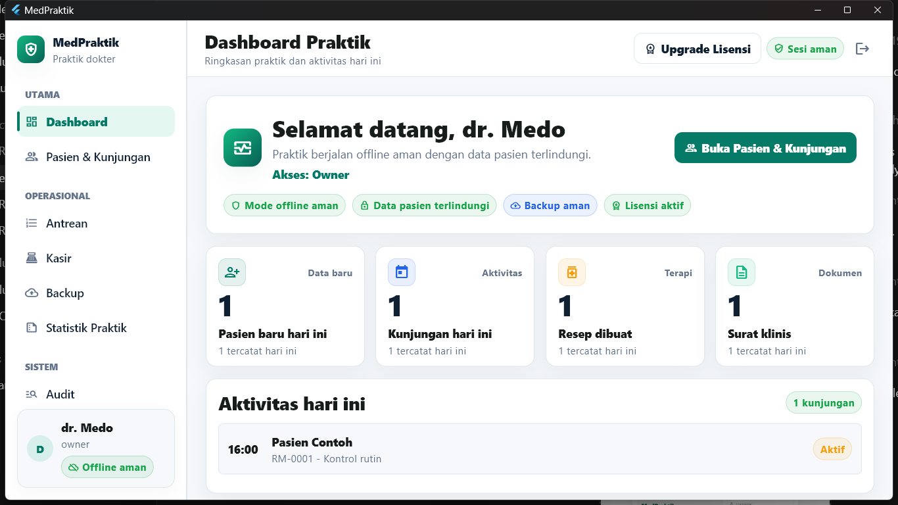
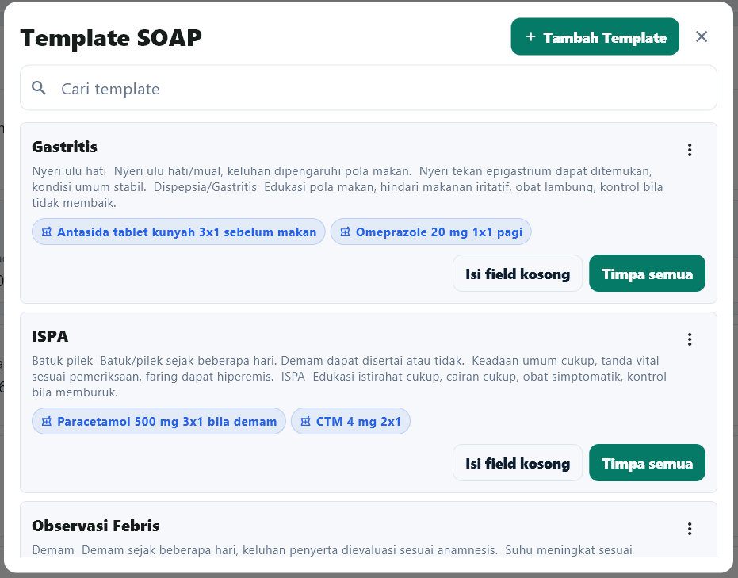
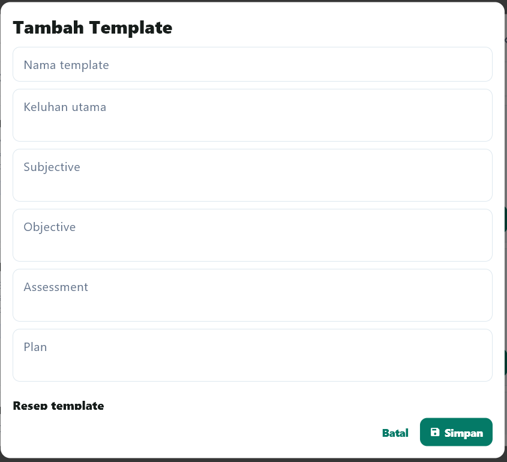
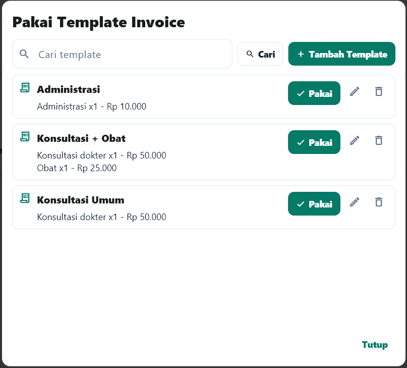
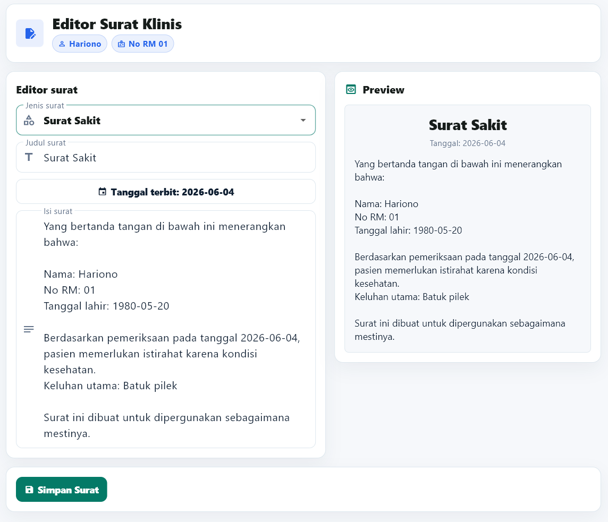
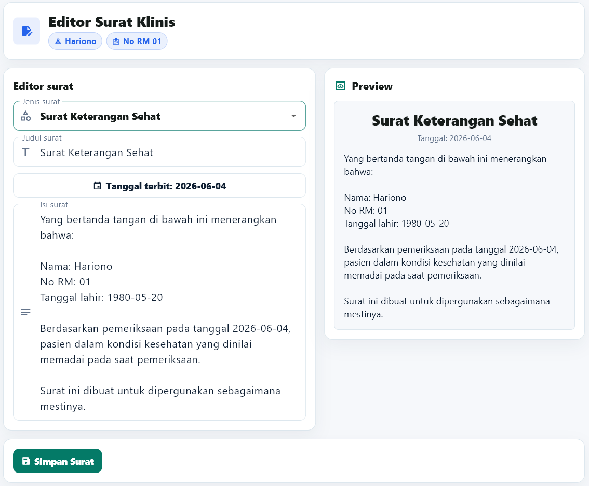

Catatan masih manual
Buku dan kertas cepat dipakai, tetapi riwayat pasien sulit dicari saat kunjungan berikutnya.
RME Offline untuk Laptop Dokter
Kelola pasien, kunjungan, SOAP, resep, surat klinis, statistik praktik, backup, dan aktivasi lisensi dari laptop Windows, tanpa server rumit dan tetap bisa berjalan saat internet tidak tersedia.
Cocok untuk dokter praktik mandiri yang ingin naik kelas dari buku/Excel tanpa langsung memakai sistem cloud yang rumit.
Demo pakai data dummy, dibantu pilih paket, tanpa checkout otomatis, dan tanpa biaya bulanan wajib.

Masalah yang diselesaikan
Buku dan kertas cepat dipakai, tetapi riwayat pasien sulit dicari saat kunjungan berikutnya.
Dokter/admin sering mengetik ulang dokumen yang formatnya sebenarnya bisa dibuat lebih konsisten.
Pasien, kunjungan, diagnosis, obat, dan laporan harian perlu bisa dicari tanpa membuka banyak file.
Banyak praktik butuh sistem lokal yang tetap berjalan saat internet lambat atau tidak tersedia.
Kenapa beli MedPraktik?
MedPraktik membantu praktik kecil bekerja lebih rapi, lebih cepat mencari riwayat, mempercepat input berulang lewat template, dan lebih konsisten mencetak dokumen klinis.
Pasien lama, kunjungan, SOAP, dan catatan penting tidak perlu dicari dari buku atau file terpisah.
Template SOAP membantu dokter mengisi keluhan, pemeriksaan, assessment, plan, diagnosis, dan follow-up tanpa mulai dari nol.
Template resep, surat sakit, surat sehat, rujukan, dan keterangan lain bisa disesuaikan agar dokumen lebih cepat dibuat.
Data praktik diarahkan untuk rutin dibackup, bukan tercecer di banyak file dan folder tanpa pola jelas.
Dokumen, laporan, dan alur kerja terasa lebih tertata saat berhadapan dengan pasien.
Tidak perlu server rumit sejak hari pertama. Mulai dari laptop utama, lalu berkembang saat kebutuhan naik.
Workflow produk
Admin mencari pasien lama atau menambahkan pasien baru, lalu membuat kunjungan hari ini.
Paket awal dimulai dari registrasi pasien dan kunjungan. Antrean sederhana tersedia melalui Basic Plus dengan pendampingan.
Dokter mencatat keluhan, pemeriksaan, assessment, plan, diagnosis, resep, dan follow-up lebih cepat dengan template SOAP yang bisa disesuaikan.
Template resep, surat klinis, ringkasan kunjungan, invoice, dan kwitansi membantu dokumen praktik tampil konsisten tanpa mengetik ulang format.
Owner dapat menjaga data lokal dengan backup/restore dan melihat aktivitas operasional penting.
Kenapa offline-first?
MedPraktik membantu Anda mulai rapi dari laptop utama, tetap bisa digunakan tanpa internet, lalu dapat naik ke tahap lanjutan saat kebutuhan berkembang.
Template praktik
MedPraktik mempercepat input rekam medis dan dokumen harian lewat template SOAP, invoice, resep, surat keterangan, dan dokumen klinis lain yang dapat dibuat atau diubah langsung di aplikasi.

Percepat input keluhan, pemeriksaan, assessment, plan, diagnosis, dan follow-up tanpa menghilangkan catatan dokter.
Invoice dan kwitansi Basic Plus lebih konsisten untuk administrasi antrean, kasir, dan laporan pemasukan.
Surat sakit, surat sehat, rujukan, resep, dan keterangan lain bisa dibuat lebih cepat dari format yang sudah siap.
Gunakan placeholder data pasien, dokter, klinik, tanggal, dan kunjungan agar dokumen tetap fleksibel.




Fitur utama
Identitas, kontak, alergi, catatan penting, dan riwayat kunjungan pasien.
Kunjungan harian, subjective, objective, assessment, plan, diagnosis, dan follow-up.
Buat template keluhan, pemeriksaan, assessment, plan, diagnosis, dan follow-up sesuai pola praktik.
Resep, surat sakit, surat sehat, rujukan, ringkasan kunjungan, dan laporan profesional.
Format surat klinis dan resep dapat diedit sendiri memakai placeholder pasien, dokter, klinik, dan tanggal.
Lihat kunjungan, pasien baru, pasien kontrol, diagnosis, obat, antrean, dan pemasukan sesuai paket.
Backup lokal terenkripsi dan restore tersedia untuk menjaga data praktik.
Aplikasi memakai aktivasi berbasis fingerprint perangkat. 1 perangkat membutuhkan 1 lisensi aktif.
Basic Plus mendukung template invoice dan kwitansi agar administrasi kasir lebih rapi.
Harga dan paket
MedPraktik dijual sebagai lisensi aplikasi bernilai tinggi untuk praktik yang ingin RME offline profesional. Tidak ada biaya bulanan wajib; 1 perangkat membutuhkan 1 lisensi aktif.
Basic
Rp3.500.000
Untuk dokter praktik mandiri yang ingin mulai rapi dari satu laptop utama.
Basic Plus
Rp6.500.000
Untuk praktik yang membutuhkan alur operasional sederhana selain RME inti.
Advanced
Mulai Rp12.000.000
Untuk praktik yang mulai membutuhkan server lokal, admin, dan dokter/client dalam satu jaringan.
Pro
Roadmap
Untuk pengguna yang ingin jalur fitur lengkap dan prioritas arah pengembangan MedPraktik saat scope Pro sudah matang.
Harga adalah lisensi sekali bayar untuk paket dan perangkat yang diaktifkan. 1 perangkat membutuhkan 1 lisensi aktif; perangkat tambahan membutuhkan lisensi tambahan atau upgrade paket. Upgrade paket dihitung dari selisih harga + admin/setup 10% dari selisih. Pindah aktivasi permanen dibantu maksimal 1 kali per lisensi; setelah itu dikenakan admin 25% dari harga lisensi aktif per device atau diminta membeli lisensi baru bila pola permintaan mencurigakan.
Upgrade path
Upgrade membayar selisih harga paket ditambah admin/setup 10% dari selisih.
Assisted Setup
Instalasi, aktivasi, setup nama praktik, template awal, migrasi terbatas, simulasi pasien dummy, dan panduan backup.
Diskusi pendampinganSelisih + 10%
Selisih Rp3.000.000 + admin/setup Rp300.000. Basic Plus ke Advanced Server: Rp6.050.000.
Hitung upgradeHarga di atas adalah harga publik normal, bukan promo. Bingung pilih paket? Chat WhatsApp, nanti dibantu rekomendasi sesuai alur praktik dan rencana perangkat.
Roadmap pengembangan
Roadmap ini menunjukkan arah pengembangan MedPraktik. Android/tablet, online, dan SATUSEHAT tidak diklaim siap hari ini.
Versi Android/tablet direncanakan mengikuti tingkatan Basic, Basic Plus, Advanced, dan Pro.
Online, cloud sync, dan integrasi SATUSEHAT diposisikan sebagai tahap lanjutan saat fondasi lokal matang.
Pro belum dijual publik hari ini. Paket ini disiapkan untuk fitur lokal lengkap dan prioritas roadmap ketika scope sudah matang.
Cara membeli
Tidak perlu checkout rumit. Semua dibantu via WhatsApp sampai paket jelas, pembayaran aman, installer diterima, dan aplikasi siap dipakai di laptop praktik. Pembayaran via QRIS/transfer dikirim setelah paket disepakati lewat WhatsApp.
Klik WhatsApp, jelaskan jenis praktik, jumlah perangkat, dan pencatatan saat ini.
Lihat alur MedPraktik dengan data dummy sebelum menentukan paket.
Paket direkomendasikan sesuai kebutuhan Basic, Basic Plus, Advanced, atau pendampingan setup. Pro masih roadmap.
Nominal dan QRIS/rekening dikirim setelah paket disepakati agar tidak salah bayar.
Installer, panduan, dan aktivasi dibantu sesuai paket yang dipilih.
Dibantu sampai bisa dipakai
MedPraktik dirancang untuk praktik kecil yang butuh produk ringan, tetapi tetap ingin pendampingan saat mulai menggunakan sistem baru.
Ekspektasi jelas
Screenshot aplikasi
Lihat tampilan aplikasi dengan data dummy. Visual ini membantu calon pembeli memahami login, dashboard, pasien, template SOAP, invoice, surat klinis, antrean, backup, statistik, audit, jaringan lokal, dan settings sebelum demo WhatsApp atau remote.
Keamanan dan offline
MedPraktik dirancang untuk laptop praktik. Database terenkripsi, backup tersedia, cetak dokumen klinis lebih rapi, dan aktivasi perangkat membantu menjaga lisensi tetap aman.
FAQ
Tidak wajib untuk operasional harian. Produk diposisikan offline-first untuk Windows.
Data tersimpan lokal di laptop atau server praktik, sesuai paket dan setup yang digunakan.
Ya, pembelian adalah lisensi sekali bayar untuk paket dan perangkat yang diaktifkan. Tidak ada biaya bulanan wajib. 1 perangkat membutuhkan 1 lisensi aktif; support, pindah aktivasi, update besar, dan fitur lanjutan mengikuti ketentuan paket atau upgrade.
Bisa. Praktik dapat mulai dari Basic, lalu upgrade ke Basic Plus atau Advanced sesuai kebutuhan perangkat, antrean/kasir, dan jaringan lokal. Biaya upgrade dihitung dari selisih harga paket ditambah admin/setup 10% dari selisih.
Bisa, tetapi setiap perangkat membutuhkan lisensi aktif. Untuk pemakaian beberapa perangkat, gunakan lisensi tambahan atau paket Advanced. Advanced menambahkan Client Admin Rp3.500.000/device dan Client Dokter Rp4.500.000/device.
Basic fokus RME inti di satu perangkat. Basic Plus menambahkan antrean, kasir, invoice, dan kwitansi. Advanced untuk jaringan lokal atau multi-perangkat. Pro belum dijual publik dan masih diposisikan sebagai roadmap prioritas.
Resep, surat sakit, surat sehat, rujukan, ringkasan kunjungan, dan laporan tersedia untuk kebutuhan praktik. Invoice dan kwitansi tersedia di Basic Plus.
Ya. Template SOAP, resep, surat klinis, invoice, dan dokumen praktik dapat dibuat atau diedit sendiri di aplikasi. Setup awal template juga bisa dibantu sesuai paket.
Ya, backup/restore lokal tersedia sebagai bagian penting dari produk offline.
Diposisikan sebagai roadmap pengembangan. Nantinya Android/tablet juga mengikuti tingkatan Basic, Basic Plus, Advanced, dan Pro.
Belum diklaim siap hari ini. Online, cloud sync, dan integrasi SATUSEHAT adalah roadmap lanjutan. Pro belum dijual publik sampai scope Android/tablet, online, dan SATUSEHAT lebih jelas.
Lisensi MedPraktik terikat pada fingerprint perangkat. Pindah aktivasi karena laptop rusak, hilang, atau ganti perangkat permanen dapat dibantu maksimal 1 kali per lisensi melalui verifikasi manual. Setelah kuota ini habis, permintaan berikutnya dapat dikenakan admin 25% dari harga lisensi aktif per device atau diminta membeli lisensi baru bila pola permintaan mencurigakan.
Ya. Paket Assisted Setup mencakup bantuan instalasi, aktivasi lisensi, setup nama praktik, template dokumen, simulasi data dummy, dan panduan backup. Paket Basic tetap mendapat panduan instalasi dan arahan aktivasi awal.
Bisa didiskusikan saat demo. Untuk tahap awal, migrasi sederhana dapat dibantu secara terbatas sesuai kualitas data Excel dan paket pendampingan.
Bisa. Demo awal diarahkan 15 menit lewat WhatsApp atau remote singkat agar calon pembeli melihat alur produk sebelum memutuskan paket.
Setelah demo dan paket cocok, pembayaran dilakukan manual via transfer bank atau QRIS. Installer, panduan, dan bantuan aktivasi dikirim setelah pembayaran dikonfirmasi.
Tidak untuk tahap awal. Installer dikirim setelah pembayaran dikonfirmasi agar proses instalasi, lisensi, dan aktivasi tetap jelas.
Aplikasi memakai aktivasi berbasis fingerprint perangkat. 1 perangkat membutuhkan 1 lisensi aktif sesuai paket publik yang dipilih: Basic, Basic Plus, atau Advanced. Pro belum dijual publik. Detail teknis lisensi tidak perlu dipilih sendiri oleh pembeli dan akan dibantu saat aktivasi.
Belum. Tahap awal memakai konsultasi/demo manual agar kebutuhan praktik dipahami sebelum pembayaran, instalasi, dan aktivasi.
Konsultasi / Minta Demo
Demo awal via WhatsApp atau remote singkat. Klik tombol demo atau hubungi WhatsApp +62 831-1486-9650.
WhatsApp: +62 831-1486-9650
Biasanya dibalas untuk jadwal demo, instalasi, dan konsultasi paket MedPraktik.